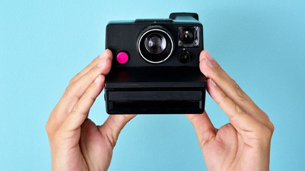
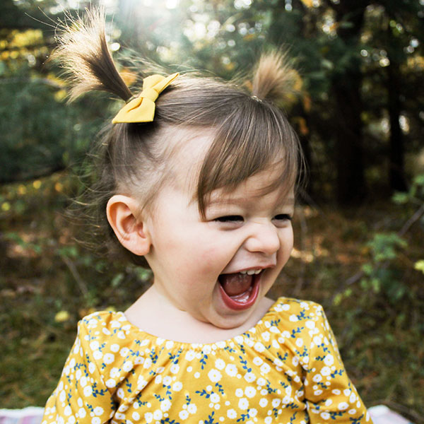
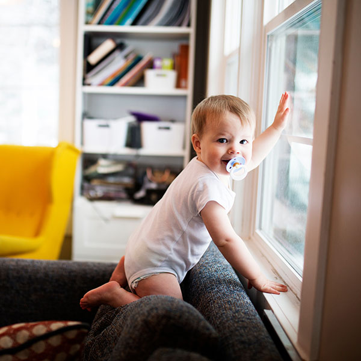
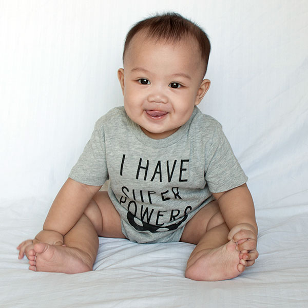

Tips for Photographing Your Baby
 The medical information provided is for informational purposes only.Taking great pictures of your sweetie is a snap so long as you follow these picture-perfect baby-photo tips.
It doesn’t take much for your baby to look adorable — all she has to do is flash that toothless grin. Your challenge is to capture her cuteness for posterity, even if you’ve got pretty limited camera skills. To the rescue: these tried and true techniques that’ll have you shooting like a pro without shelling out a professional’s fee. And you don’t need a pricey camera to get priceless results, either — just grab whatever camera you’ve got (even your smartphone), then read on to learn how to make the most of every baby photo op.
Find the best light
 The medical information provided is for informational purposes only.Forget all the fancy flash settings on your camera. As long as there’s daylight, you can get beautiful baby photos with natural light, no matter if you’re using a disposable or a top-of-the-line gadget. Place a blanket in a patch of sun outside or in front of a window or glass door, then plunk your little one down and start snapping.
Time the light right
 The medical information provided is for informational purposes only.Photographers love north-facing windows because they let in indirect sunshine that’s not so harsh or glaring. You can get similar results by waiting for the right time of day to snap your pics. Photograph your baby in front of a west-facing window in the morning or an east-facing window in the afternoon to keep her from squinting and minimize shadows. Shooting outside? Time it for what some photographers call the Magic Hour, which is usually the first hour after sunrise or the last two hours before sunset. The light is softer and warmer, shadows are longer, and everyone looks beautiful — especially your baby.
Photograph growth by the month
The medical information provided is for informational purposes only.No one knows better than you how fast babies change in that first year. To create visible proof that your wee one used to be really wee, plan a monthly baby photo shoot in the same setting. Place your pipsqueak on a blanket next to a sign with her age on it (like “Zoe, one month”). Or sit her in a big chair next to a stuffed animal, which will act as a reference point for scale — the teddy that once dwarfed your newborn will soon enough be clutched in her toddler arms. Wherever you choose to shoot your baby photos, keep the backdrop consistent, so the only element that changes is your child.
Capture the details
Faces are fabulous, but so are details you wouldn’t normally focus on. Make sure to zoom in on little things like that whorl of hair at the back of her head, those perfect tiny toenails, that Buddha belly and crazy-cute belly button. Camera phones normally aren’t great at getting this up close and personal, but even without a zoom lens you can take pictures that highlight your baby’s feet, her profile, her nose, her lone first tooth. That’s the sweet stuff you won’t want to forget as your bundle gets bigger.Create a simple backdrop
 One simple baby-photo tip for getting pro-photographer results at home: Eliminate background clutter by placing your pumpkin in front of a plain DIY backdrop. Drape a white sheet over a few chairs, tape a piece of plain wrapping paper to the wall, or just set your sweetie on top of a white down comforter on the floor. If you do end up taking pictures of baby with something less-than-stellar in view, try cropping those surroundings out of the frame by getting closer to your subject while you shoot.Keep baby comfy
Want a cooperative model? Then make sure she’s well rested, well fed, and comfortable (with a clean diaper and clothes that aren’t too hot or too tight). Plan your photo shoot within a half hour after feeding your baby and keep her outfit simple. If you want to capture her in her birthday suit, turn on a space heater (not too nearby) to keep her toasty warm.Copyright By Anthem Inc